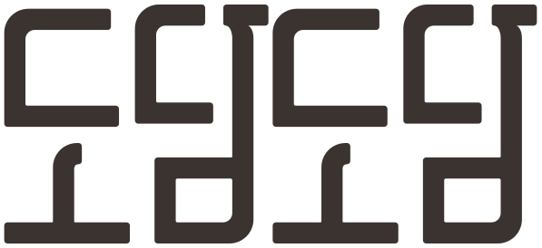
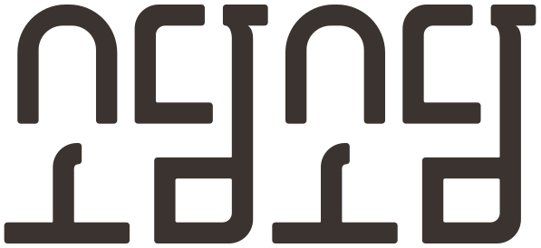

Dodamdodam도담도담은 하루의 할 일을 도시락에 담아 기록하는 앱이에요. 할 일을 마칠 때마다 반찬을 하나씩 골라 도시락 칸에 담아요.

SodamSodam소담소담은 집중한 시간을 종이학으로 접어 모으는 앱이에요. 손에 잡히지 않던 시간이 유리병 속 종이학으로 남아요.
종이를 고르면, 그 종이로 다시 접어요.
흰색 종이로 접는 중
푸르담은 매일의 루틴을 테라리움으로 키우는 앱이에요. 지킨 날만큼 식물이 자라고, 한 달이면 나만의 작은 숲이 돼요.
담담 서체
여기에 직접 써 보세요 ↑ 영문 · 숫자만 있어요. 한글은 다른 글꼴로 보여요.
ABCDEFGHIJKLMNOPQRSTUVWXYZ abcdefghijklmnopqrstuvwxyz 0123456789 .,:;!?&@#()-+/